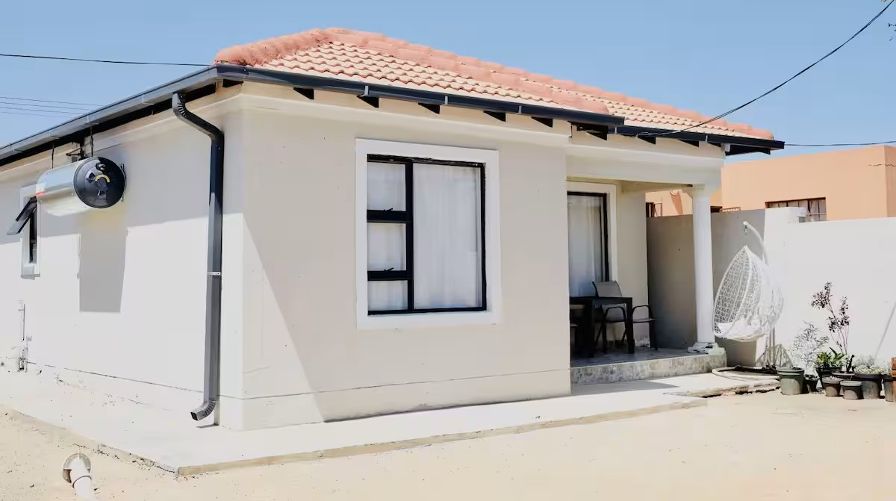
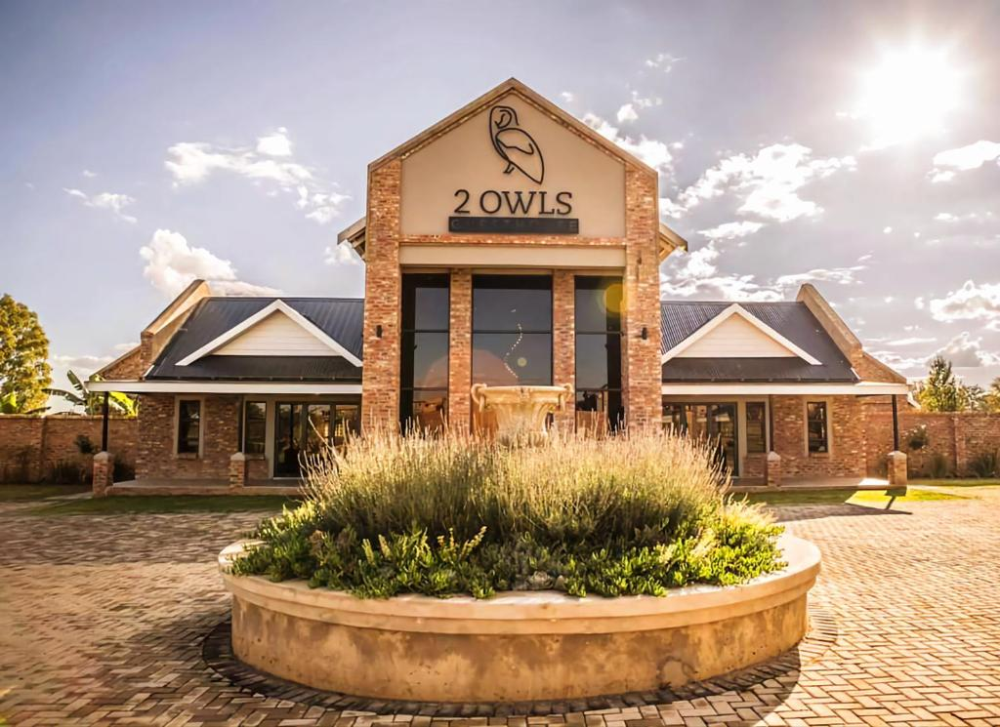
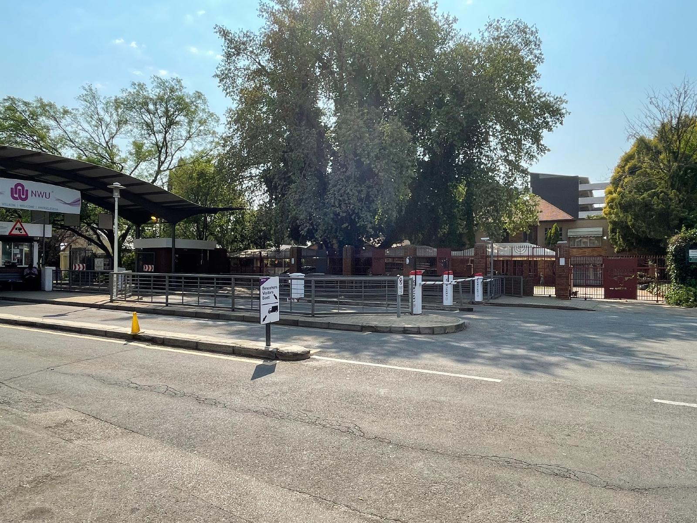

Parys
Eagle's Nest

Sien Booking
Farm stay in Rooderand

Sien Booking
34 Kruger Cottage

Sien Booking
Schilbach House

Sien Booking
Naledi Guesthouse

Sien Booking
Horse Whisper Unit 5

Sien Booking
Abelia Guest Rooms

Sien Booking
La Belle Guesthouse Parys

Sien Booking
Pecan Tree

Sien Booking
Six Second Avenue

Sien Booking
Potchefstroom
Die Opstal Gastekamers

Sien Booking
The Oak Potch

Sien Booking
Biekierus Selfsorg

Sien Booking
2 Owls Guesthouse

Sien Booking
Beesdam

Sien Booking
Home